Eksplorasi Sains Data, Solusi Nyata, & Kepemimpinan.
Halo! Saya Joeang Ikhsan Maulana, mahasiswa Teknologi Sains Data Universitas Airlangga yang berfokus pada statistika terapan, pemodelan data (Python & R), rekayasa machine learning, serta kepemimpinan bidang advokasi mahasiswa.
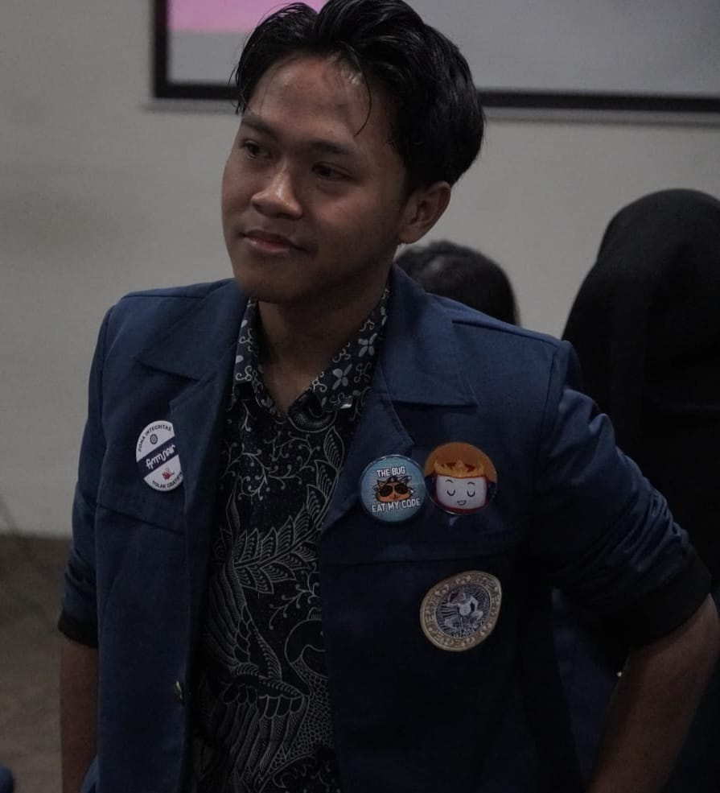
Joeang Ikhsan Maulana
Surabaya • Nganjuk, Jawa Timur
Keahlian Profesional
Data Science & Web Development
Pengalaman dalam membangun model Machine Learning, statistika inferensial, serta arsitektur backend sistem pakar.
Leadership & Manajemen
Terlatih dalam memimpin tim lintas divisi, negosiasi tingkat fakultas, penyelesaian masalah, dan manajemen acara skala besar.
Hak Cipta Kemenkum RI & Poster Riset
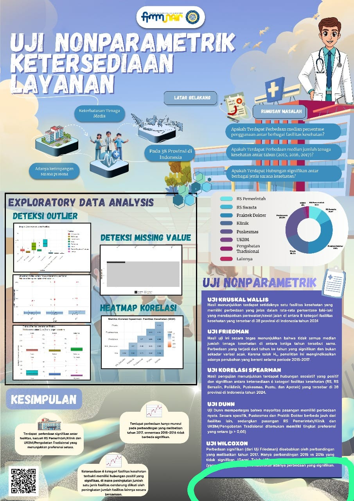
Informasi Hak Cipta Terdaftar
Metodologi Statistik Nonparametrik
Mendeteksi perbedaan signifikan persentase rawat jalan di 8 jenis faskes (Puskesmas & Dokter Praktik berbeda signifikan dari fasilitas lain).
Menguji tren median nakes 2015–2017; lonjakan signifikan terbukti muncul kuat pada perbandingan periode 2017.
Menunjukkan relasi asosiatif positif antar ketersediaan faskes (RS, RS Bersalin, Poliklinik, Puskesmas, Pustu, dan Apotek) secara komprehensif.
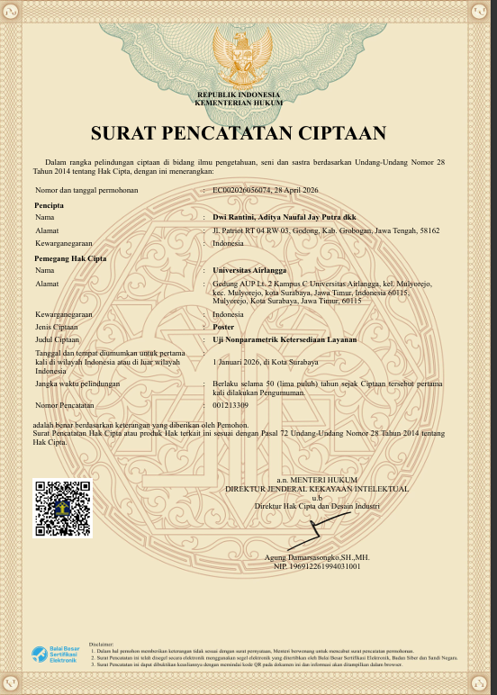
Surat Pencatatan Ciptaan DJKI
Nomor Permohonan: EC002026056074 (28 April 2026)
Masa Lindung: Berlaku 50 Tahun sejak diumumkan
4 Proyek Analisis Data & Machine Learning
Eksplorasi ekonometrika, NLP deep learning, social media mining, hingga perancangan sistem pakar.
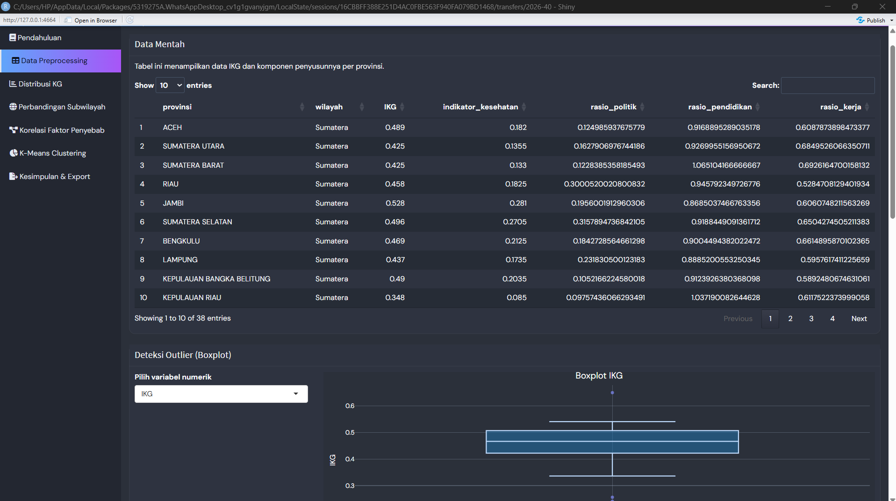
RShiny Dashboard (2025)Analisis Indeks Ketimpangan Gender (IKG) Indonesia 2023
Pemodelan ekonometrika dengan Regresi Linear Berganda OLS dan segmentasi wilayah 34 provinsi menggunakan K-Means Clustering untuk merumuskan kebijakan berbasis data (Data BPS & KemenPPPA 2023).
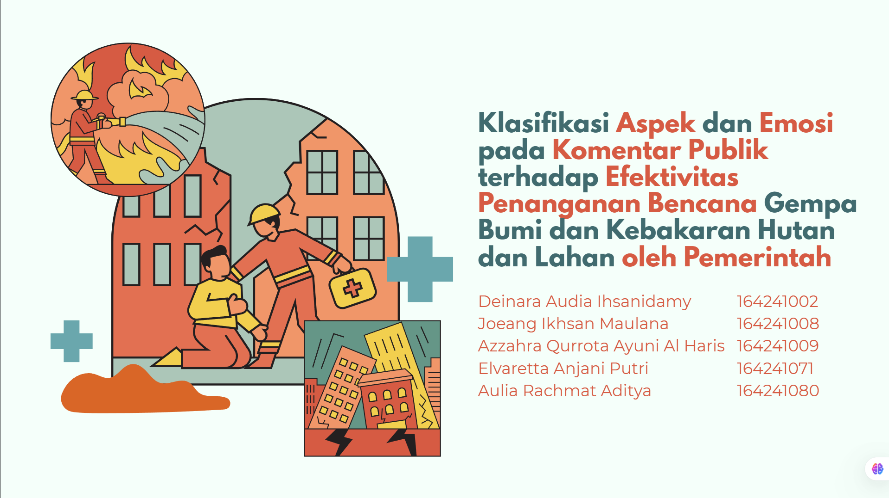
Deep Learning & NLP (2026)Klasifikasi Aspek & Emosi Respons Bencana (IndoBERT)
Pemodelan bahasa alami untuk mengklasifikasikan 9 Aspek dan 6 Kategori Emosi opini publik terhadap penanganan bencana Gempa M7.7 NTT & Karhutla Kalimantan (2.890 korpus teks X & TikTok).
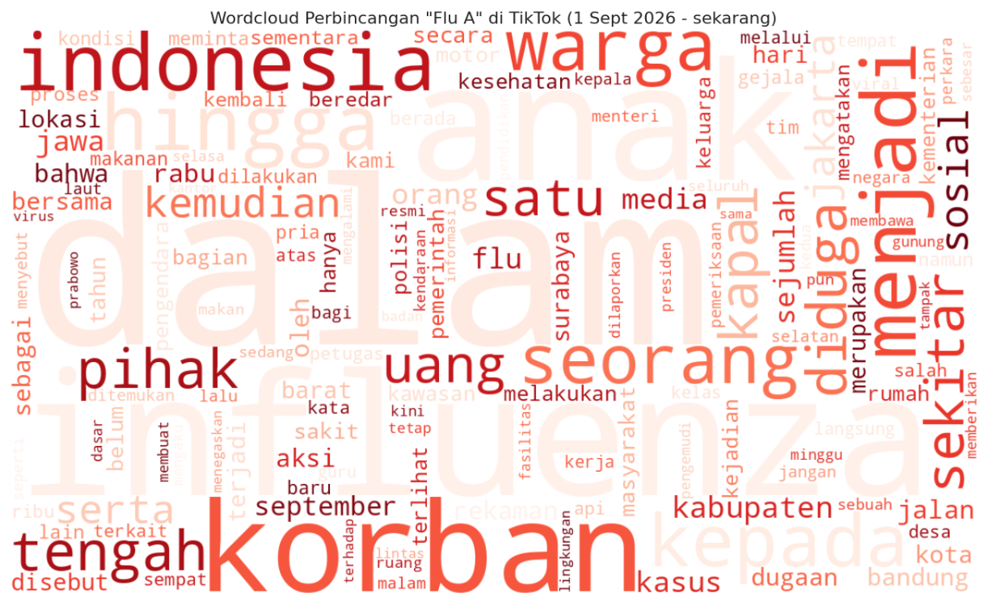
Social Media Mining & SNA (2026)Social Media Mining & Clustering: Tren Isu Flu A di TikTok
Analisis penambangan teks dari ribuan data postingan TikTok (41,3 Juta interaksi) menggunakan Apify Scraper, TF-IDF & K-Means Clustering, serta pemetaan relasi melalui SNA.
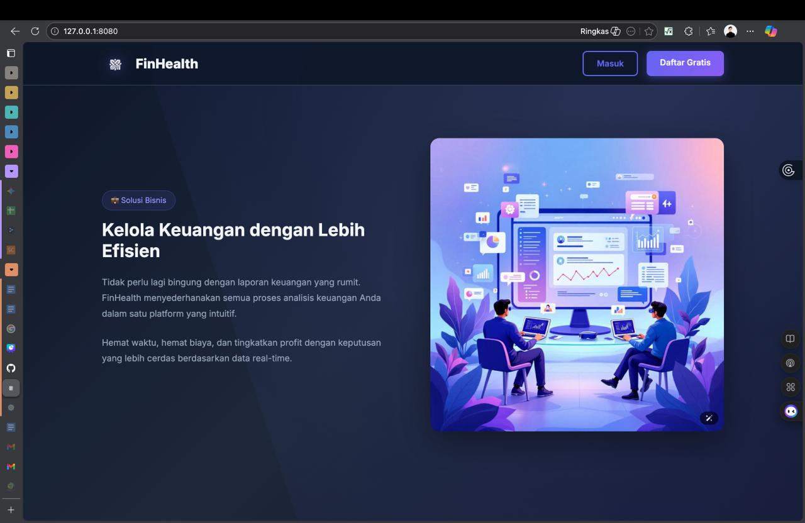
Expert System & REST API (2025)FinHealth: Expert System Kesehatan Finansial UMKM
Aplikasi web sistem pakar yang menganalisis rasio keuangan, arus kas, dan performa omzet penjualan secara otomatis serta menghasilkan saran perbaikan operasional bagi pelaku UMKM.
Pengalaman Organisasi BEM FTMM
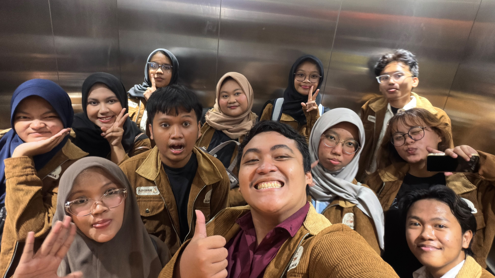
2026 – SekarangMenteri Advokasi & Kesejahteraan Mahasiswa
Kementerian Adkesma BEM FTMM 2026
Memimpin advokasi, pengawalan beasiswa, dan pelayanan kesejahteraan untuk mahasiswa dari 5 prodi FTMM serta jembatan aspirasi utama ke fakultas.
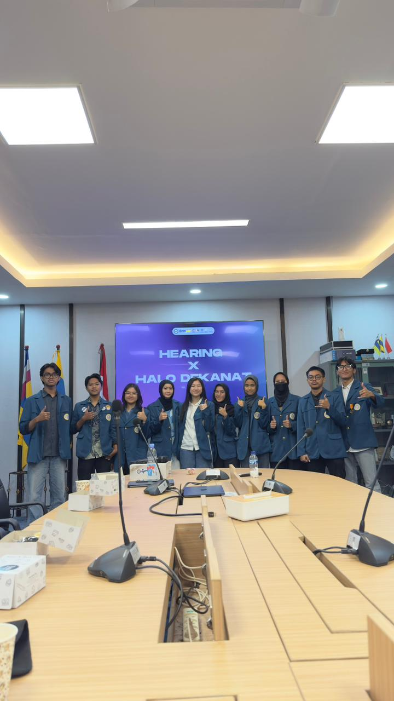
Most Dedicated Staff 2025Dirjen Kesejahteraan Mahasiswa
Kementerian Adkesma BEM FTMM 2025
Mengoordinasikan terkait finansial, Beasiswa, dan Aspek Kesejahteraan Mahasiswa lainnya kepada pihak fakultas.
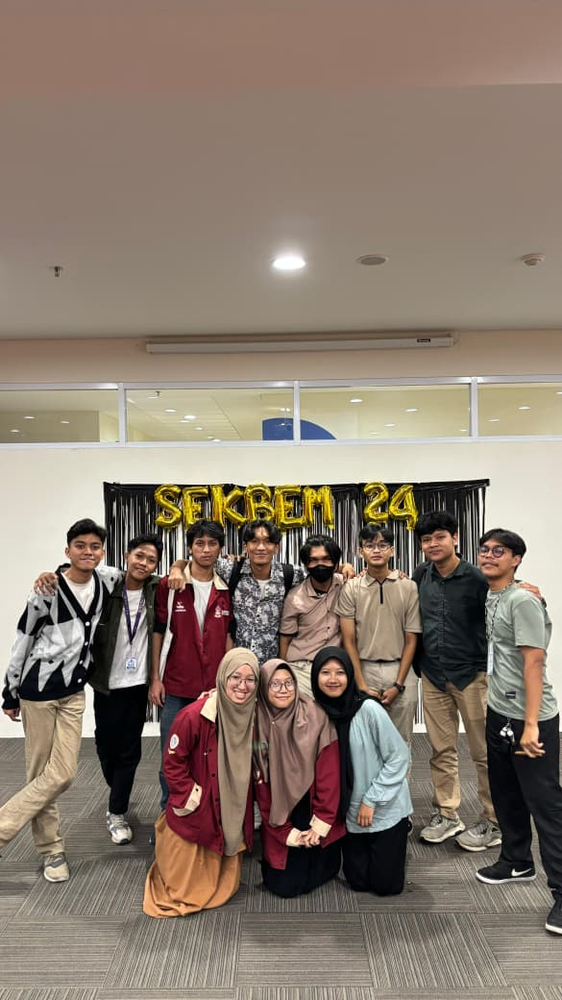
Sekbem Adkesma Terbaik 2024Sekolah BEM FTMM 2024
Kementerian Adkesma BEM FTMM 2024
Aktif dalam praktik advokasi langsung dan dinobatkan sebagai Staf Terbaik Kementerian Adkesma pada Sekolah BEM FTMM 2024.
Alur Pengalaman Kepanitiaan
Pilih kategori peran di bawah ini untuk melihat detail tugas dan tanggung jawabnya:
EXCEED × NEWTON 2026
Student Inbound Malaysia & Thailand
Mendukung pelaksanaan inbound 7 universitas mancanegara di FTMM & FST UNAIR, mengoperasikan perangkat audio visual serta menangani kendala teknis secara langsung.
ICATAM × I-PACT 2025
International Conference (Univ. Malaya & VIT)
Operator sistem audio visual 2 hari penuh untuk kebutuhan presentasi narasumber internasional dan kelancaran multimedia konferensi.
Seminar Nasional SMART-INTECH
Fakultas Teknologi Maju dan Multidisiplin
Mengendalikan perangkat presentasi, audio, dan sistem live event untuk mendukung pemaparan narasumber tingkat nasional.
KARSA FTMM 2026
Koordinator Divisi Koordinasi Lapangan
Memimpin divisi korlap dalam mengatur mobilisasi ratusan maba, alur teknis harian orientasi, serta mitigasi cepat risiko insidental di lapangan.
KARSA FTMM 2025
Staff Koordinasi Lapangan
Mengatur ketertiban 502 mahasiswa baru dari lima program studi FTMM selama orientasi 3 hari dan menjadi jembatan informasi panitia inti.
COLAB FTMM 2025
Staff Koordinasi Lapangan
Mengarahkan alur kegiatan peserta, menjaga ketepatan waktu susunan rundown acara, dan menangani kendala teknis lapangan.
Posko Finansial Mahasiswa
Kementerian Adkesma BEM FTMM
Memimpin perancangan dan operasionalisasi posko advokasi keringanan UKT serta pendampingan beasiswa finansial bagi mahasiswa selama 2 termin penuh.
Scholprep × Inspiration
Koordinator Divisi Acara
Menyusun konsep, rundown seminar & pelatihan beasiswa, koordinasi dengan pembicara, serta memandu jalannya acara secara on-time.
Synreach FTMM, Diskusi Bulanan & BBTM
Koordinator Sub-Divisi Perlengkapan
Bertanggung jawab penuh atas pengadaan, distribusi, dan inventarisasi peralatan Dekan Cup Synreach (7 bulan), 5 sesi Diskusi Bulanan, dan Bring Back The Memory 2024.
Jenjang Pelatihan Manajerial Mahasiswa (LKMM)
Pengembangan dan pelatihan manajerial resmi tingkat perguruan tinggi yang ditempuh secara berjenjang dari tingkat dasar hingga lanjut.
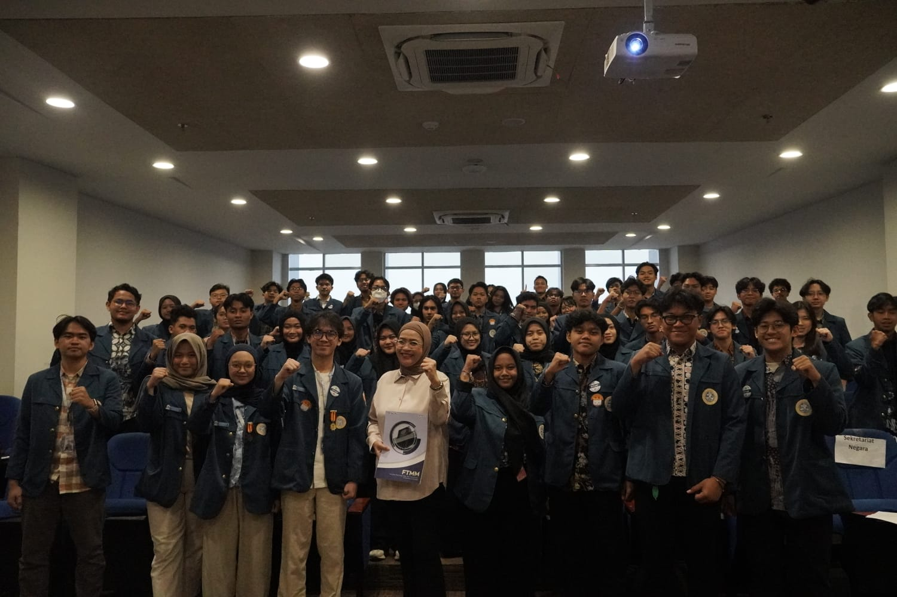
November 2025LKMM-TD
Tingkat Dasar
Mempelajari fondasi kepemimpinan personal, komunikasi interpersonal efektif, dinamika kerja tim, serta pengambilan keputusan dalam organisasi.
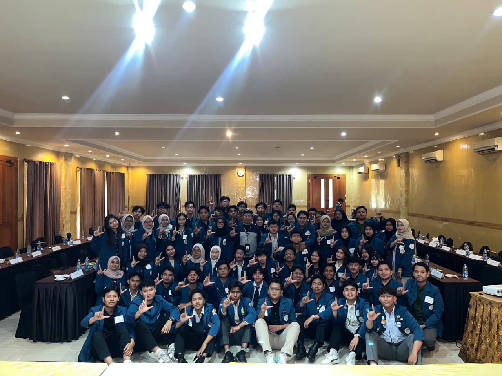
Juni 2026LKMM-TM
Tingkat Menengah
Manajemen organisasi strategis, analisis SWOT, perancangan RPO (Rencana Pengembangan Organisasi), serta studi lapangan solusi bisnis UMKM.
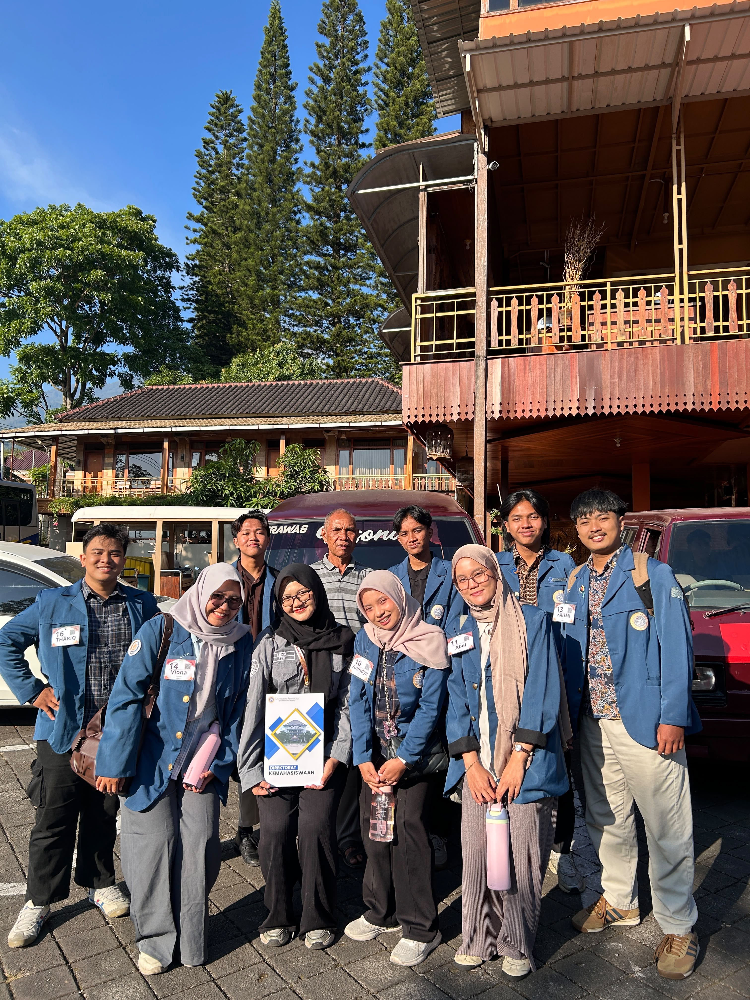
Juli 2026LKMM-TL
Tingkat Lanjut
Analisis periskop terhadap potensi komoditas lokal Dusun Jaraan, serta merancang rencana strategis hilirisasi pertanian&peternakan berbasis kelembagaan BUMDes dan matriks Monev SMART untuk meningkatkan nilai ekonomi masyarakat.
Dokumentasi Pengabdian Masyarakat
Digitalisasi & Website Promosi UMKM Dawarblandong
Program pendampingan dan digital branding bagi pelaku UMKM di Kecamatan Dawarblandong, Kabupaten Mojokerto. Meliputi perancangan etalase website promosi terpadu, pembuatan materi katalog digital, dan pelatihan penggunaan platform daring secara berkesinambungan.
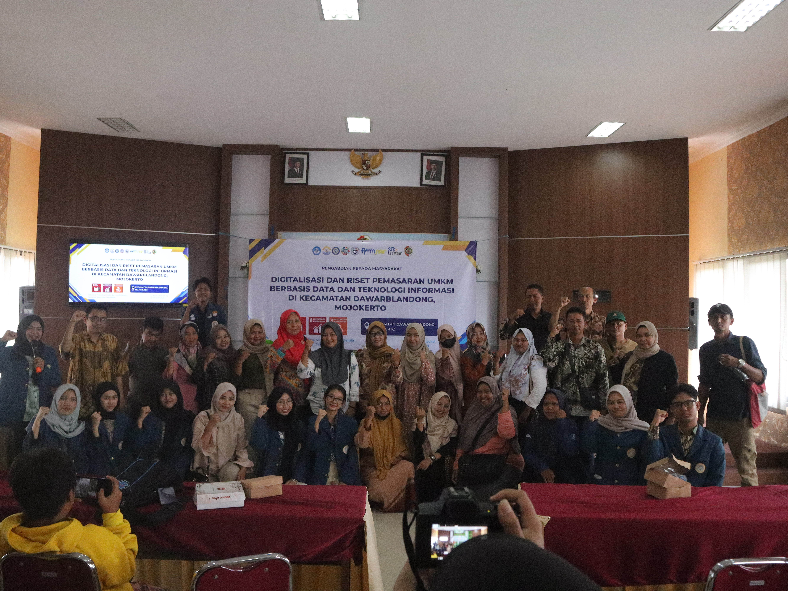
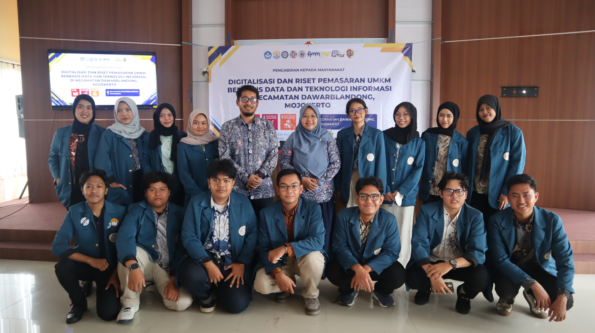
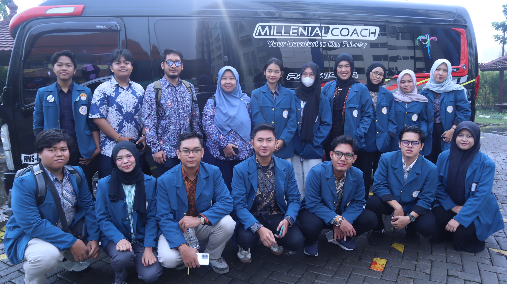